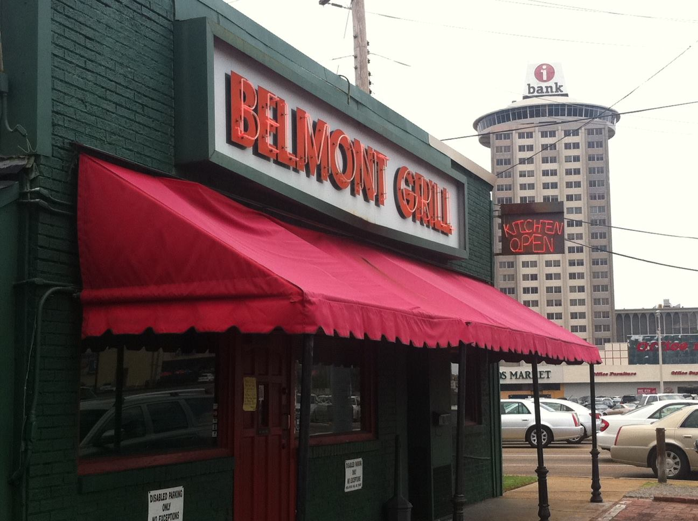

The Belmont Grill
One of East Memphis's most venerable hang outs, from our world famous burger to our 'Bucket List' onion rings..
One of East Memphis's most venerable hang outs, from our world famous burger to our 'Bucket List' onion rings..
Check out our menu!
Some things never change and that's a good thing Feb 2024 • friends I've been going here for decades but this was my first time since the pandemic hit in March 2020. Nothing's changed: it was like stepping back in time to four years ago, 10 years ago, 20 years ago, etc. It's bar food for East Memphis types who don't want to go to midtown. I met up with a friend for an after-work dinner. He loves this place.... I ordered the burger because my friend said their burgers are better than Huey's. .... My friend ordered chicken and the onion rings and raved about the onion rings. The service was great. Our waitress was extremely attentive and kept our drinks filled. The night we were there, I saw all these people who were obviously of retirement age. I'm guessing these people have been coming here since the Belmont opened. Also, there were some barflys. There always are in these places. I felt like I was in my 20s again. Would I go back again? Yup. The food was tasty and filling, the service was great, and the ambiance made for a laid-back meal.
An established Memphis favorite. Aug 2018 • family The same locals eat her daily, the wait staff knew most of the guests. We were new to it but have been back since. Food is good, service is good, prices are good. It's a dark interior,very relaxed atmosphere. The burgers are delicious...highly recommend. We will be back!
Cozy atmosphere, friendly staff, good food Jun 2018 • couples This is your typical 'hole in the wall' restaurant. It's a one-of-a-kind and locally owned. I think these places have the best food and personable employees. There's a decent list on the menu, but heavy on the sandwiches and burgers which I assume are their specialties. I had a Reuben and it was delicious with just the right amount of meat, not skimpy or piled too high. The fries were also great. My husband had fried catfish. The filets were ample and not greasy. The gumbo had plenty of crab and shrimp and was not too spicy. The server brought out a bottle of Tabasco to add if he wanted it. I think that's the way to go so that everyone could eat this dish as they prefer. I've also had the French Dip sandwich here and it's also just the right amount of roast beef that's never fatty or tough. I like the french bread its served on as well.... One other thing to mention, our server told us they have $5 Burger Night every Tuesday. Not sure how long this will last, but we intend to give this a try soon!